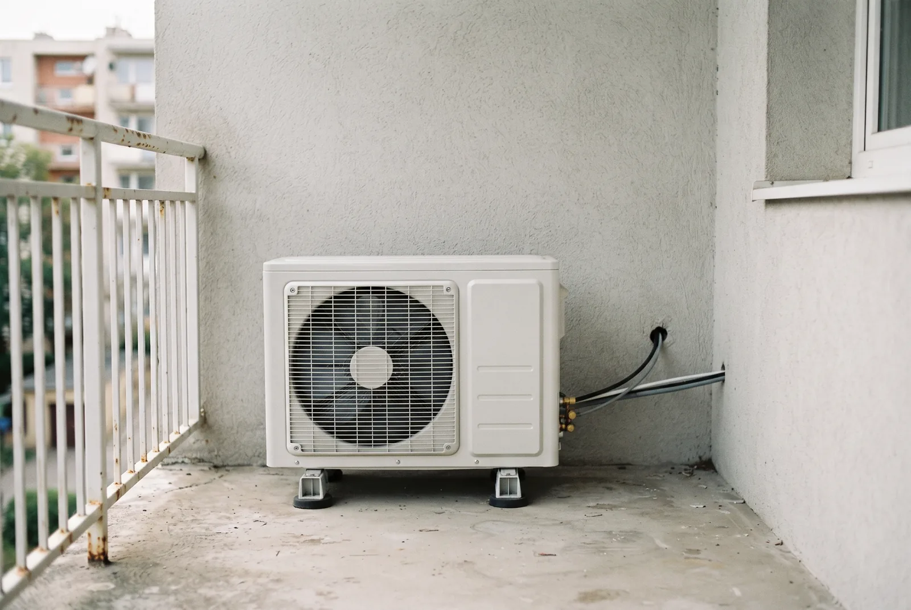
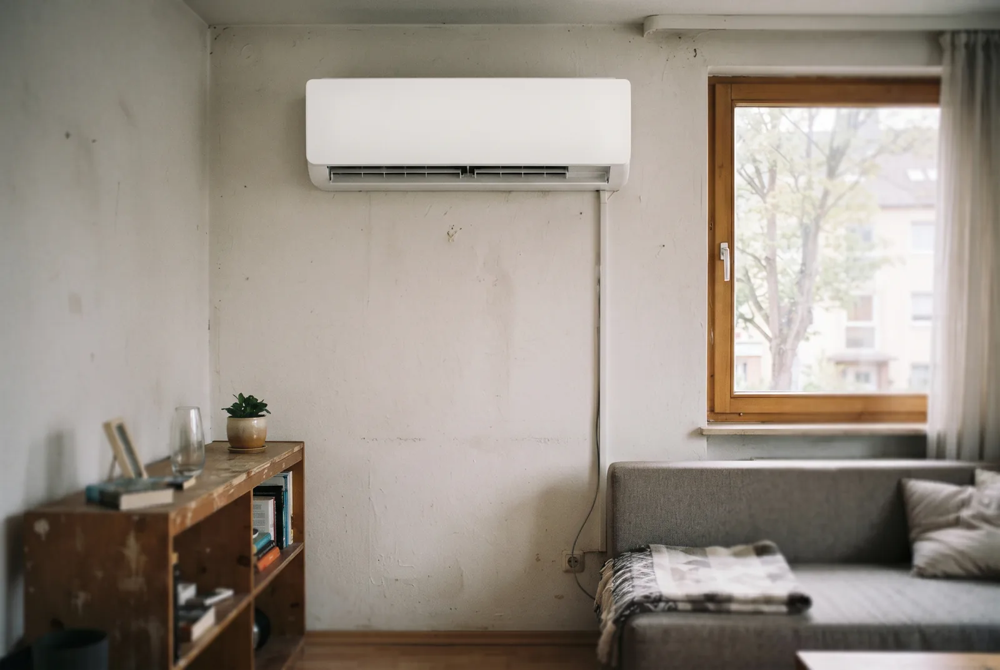
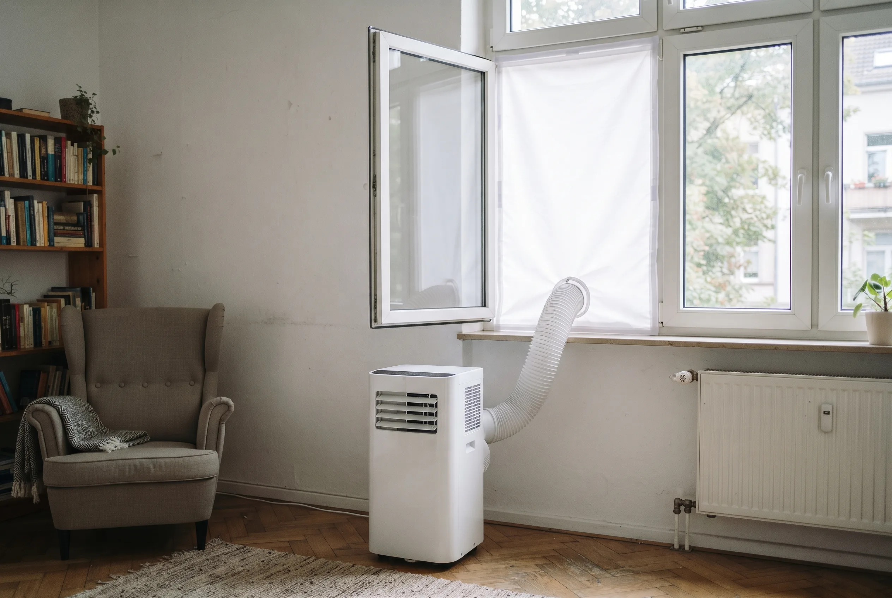

Inhaltsverzeichnis
- Was Sie ohne Erlaubnis dürfen — und was nicht
- Warum die Split-Klimaanlage rechtlich eine bauliche Veränderung ist
- Wer zahlt was: Anschaffung, Einbau, Strom und Rückbau
- Haben Sie Anspruch auf Kühlung oder Mietminderung bei Hitze?
- So holen Sie die Zustimmung Ihres Vermieters ein
- Alternativen für Mieter: Kühlen ohne Umbau
- Für Vermieter und Eigentümer: Kühlung als Investition
- Fazit
- Häufige Fragen
Das Wichtigste in Kürze
- Kernaussage: Ein mobiles Monoblock-Gerät mit Abluftschlauch dürfen Sie ohne Zustimmung betreiben — eine fest installierte Split-Anlage niemals.
- Bauliche Veränderung: Kernbohrung und Außengerät greifen in die Bausubstanz ein. Ohne vorherige Zustimmung des Vermieters drohen Rückbau, Abmahnung und im Extremfall die Kündigung.
- Kein Anspruch auf Kühlung: Hitze allein ist kein Mietmangel. Eine Minderung kommt nur in Betracht, wenn ein baulicher Mangel die Überhitzung verursacht.
- Kostenverteilung: Wer die Anlage will, zahlt Anschaffung, Montage, Strom, Wartung und Rückbau — beim Mieter-Einbau also der Mieter.
- Für Eigentümer: Eine Split-Anlage ist technisch eine Luft-Luft-Wärmepumpe. Als Heizung ist sie über die KfW-Heizungsförderung 458 genauso förderfähig wie andere Wärmepumpen.
- Alle Förder- und Rechtsangaben: Stand 13. Juli 2026, ohne Gewähr – Details in der Hinweisbox am Ende des Beitrags.
1. Was Sie ohne Erlaubnis dürfen — und was nicht
Die für Mieter entscheidende Trennlinie im deutschen Mietrecht verläuft nicht zwischen „laut und leise" oder „teuer und günstig", sondern zwischen vertragsgemäßem Gebrauch und baulicher Veränderung. Nach § 535 BGB überlässt Ihnen der Vermieter die Wohnung zum vertragsgemäßen Gebrauch. Alles, was Sie in dieser Wohnung tun, ohne in ihre Substanz einzugreifen, ist Ihre Sache — Sie müssen nicht fragen, ob Sie einen Kühlschrank aufstellen, einen Ventilator laufen lassen oder ein Gerät an die Steckdose hängen dürfen.
Genau in diese Kategorie fällt das mobile Monoblock-Klimagerät. Es steht frei im Raum, saugt Raumluft an, kühlt sie und leitet die Abwärme über einen flexiblen Schlauch nach draußen — durch ein gekipptes Fenster, eine Fensterabdichtung oder eine Balkontür. Es wird nichts gebohrt, nichts geschraubt, nichts verändert. Nach ganz überwiegender Auffassung in Rechtsprechung und Literatur ist der Betrieb eines solchen Geräts damit vom vertragsgemäßen Gebrauch gedeckt und nicht zustimmungspflichtig. Sie kaufen es, stellen es hin, stecken es ein. Punkt.
Zwei Einschränkungen sollten Sie trotzdem kennen. Erstens: Wenn Ihr Mietvertrag eine wirksame Klausel enthält, die den Betrieb bestimmter Geräte begrenzt, oder wenn die Hausordnung Ruhezeiten regelt, gilt das auch für Klimageräte. Zweitens: Der Betrieb darf keine unzumutbaren Störungen für Nachbarn erzeugen. Ein Monoblock steht innen und ist damit vor allem für Sie selbst laut — Nachbarbeschwerden sind hier die Ausnahme.
Deutlich unschärfer ist die Lage bei mobilen Split-Geräten, deren Außeneinheit auf dem Balkon steht. Solange die Einheit frei aufgestellt ist und die Leitungen durch eine Fensterabdichtung geführt werden, liegt kein Substanzeingriff vor — es bleibt beim vertragsgemäßen Gebrauch. Sobald jedoch an der Brüstung, am Geländer, am Fensterrahmen oder an der Fassade auch nur ein Loch gebohrt oder eine Halterung verschraubt wird, kippt die Bewertung. Dann handelt es sich um eine bauliche Veränderung — und die ist zustimmungspflichtig. Weil sich diese Grenze im Einzelfall kaum sauber ziehen lässt, ist unsere klare Empfehlung: Fragen Sie vorher schriftlich an. Eine kurze E-Mail kostet Sie fünf Minuten, ein Rückbauprozess kostet Sie deutlich mehr.
Und dann gibt es den Fall, der regelmäßig vor Gericht landet: die fest installierte Split-Klimaanlage mit Kernbohrung durch die Außenwand, Kältemittelleitung und Außengerät an Fassade oder Balkon. Hier ist die Rechtslage eindeutig — ohne vorherige Zustimmung des Vermieters geht nichts.
Eigenmächtiger Einbau: Wer ohne Erlaubnis bohrt, riskiert die Rückbaupflicht auf eigene Kosten — inklusive fachgerechtem Verschließen der Bohrungen und Wiederherstellung der Fassade. Hinzu kommen Abmahnung und, bei fortgesetztem vertragswidrigem Gebrauch, im Extremfall die Kündigung des Mietverhältnisses nach § 541 und § 543 BGB.
2. Warum die Split-Klimaanlage rechtlich eine bauliche Veränderung ist
Eine Split-Anlage besteht aus einem Innengerät (dem Wärmetauscher) und einem Außengerät (dem Verdichter), verbunden durch eine Kältemittelleitung und eine Stromleitung. Damit diese Leitung nach draußen kommt, muss ein Loch durch die Außenwand — die berüchtigte Kernbohrung. Das Außengerät wiederum wird an der Fassade verschraubt oder auf dem Balkon befestigt.
Beides sind Eingriffe in die Bausubstanz. In der WEG-Rechtsprechung ist das seit Jahren gefestigt: Das Bohren eines Lochs durch die Außenfassade oder durch Fensterrahmen und das dauerhafte Anbringen eines Außengeräts gelten als Substanzeingriff und damit als bauliche Veränderung. Nichts anderes gilt im Verhältnis zwischen Mieter und Vermieter — nur dass hier nicht die Eigentümergemeinschaft, sondern der Vermieter zustimmen muss, und zwar vorher.
Der Vermieter darf ablehnen — und muss das kaum begründen
Anders als bei privilegierten Maßnahmen wie Barrierefreiheit oder Ladeinfrastruktur gibt es für Klimaanlagen keinen gesetzlichen Anspruch auf Gestattung. Das Landgericht Frankfurt am Main hat für das Wohnungseigentumsrecht klargestellt, dass der Katalog der privilegierten baulichen Veränderungen in § 20 Abs. 2 WEG abschließend ist und ein Split-Klimagerät nicht darunterfällt (LG Frankfurt am Main, Beschluss vom 20.04.2021, Az. 2-13 S 133/20). Für Mieter gilt sinngemäß dasselbe: Sie können sich auf keine Norm berufen, die den Vermieter zur Zustimmung zwingt.
Typische und in der Praxis anerkannte Ablehnungsgründe sind:
- Optik und Fassadenbild: Ein Außengerät verändert das äußere Erscheinungsbild — bei einheitlich gestalteten Wohnanlagen ein starkes Argument.
- Denkmalschutz: Bei denkmalgeschützten Gebäuden ist eine Fassadenmontage in der Regel schlicht nicht genehmigungsfähig.
- Statik und Konstruktion: Wärmedämm-Verbundsysteme, Vorhangfassaden oder tragende Bauteile vertragen keine beliebige Bohrung.
- Lärm für Nachbarn: Das Außengerät läuft draußen — und zwar oft nachts, wenn es am meisten gebraucht wird.
Der Lärmpunkt ist juristisch der schärfste. Das Amtsgericht Hamburg-St. Georg hat den Betrieb einer Split-Anlage wegen der nächtlichen Geräuschrisiken als unzumutbaren Nachteil bewertet und die Gestattung deshalb verweigert — und zwar obwohl die Grenzwerte der Technischen Anleitung zum Schutz gegen Lärm im konkreten Fall eingehalten waren (AG Hamburg-St. Georg, Urteil vom 24.09.2021, Az. 980a C 46/19). Als Orientierung: In reinen Wohngebieten darf der Nachbarschaftslärm tagsüber 50 Dezibel und nachts 35 Dezibel nicht überschreiten. Ein Außengerät mit 50 dB(A) Schalldruckpegel liegt tagsüber also gerade so im Rahmen — nachts nicht mehr ohne Weiteres.

Sonderfall Eigentumswohnung: die zweite Genehmigungsebene
Wohnen Sie zur Miete in einer Eigentumswohnung — oder besitzen Sie selbst eine —, reicht die Zustimmung des Vermieters allein nicht aus. Fassade, Außenwand und meist auch die Balkonaußenseite gehören zum Gemeinschaftseigentum. Für die Kernbohrung braucht es deshalb zusätzlich einen Gestattungsbeschluss der Eigentümergemeinschaft nach § 20 Abs. 1 WEG.
Die gute Nachricht für bauwillige Eigentümer: Der Bundesgerichtshof hat diesen Weg zuletzt deutlich erleichtert. Mit Urteil vom 23.05.2025 (Az. V ZR 128/24) hat er entschieden, dass ein mehrheitlich gefasster Gestattungsbeschluss für ein Klimasplitgerät Bestand hat und Miteigentümer ihn nur dann erfolgreich anfechten können, wenn sie eine unbillige Benachteiligung im Sinne von § 20 Abs. 4 WEG nachweisen. Abstrakte Ängste vor künftigen Belästigungen genügen dafür nicht. Der BGH führt damit die Linie fort, die er bereits im Urteil vom 28.03.2025 (Az. V ZR 105/24) zur Wanddurchbohrung für ein Klimasplitgerät eingeschlagen hatte.
Die schlechte Nachricht: Einen durchsetzbaren Anspruch auf Gestattung hat kein Eigentümer. Findet sich in der Versammlung keine Mehrheit, bleibt die Anlage draußen — auch wenn der Antragsteller sämtliche Kosten und Folgekosten übernehmen würde. Bereits das Amtsgericht Ludwigshafen hatte in einem viel zitierten Fall zwischen dem Einbau und dem späteren Betrieb unterschieden und den Gestattungsbeschluss für zulässig gehalten, dabei aber betont, dass Abwehrrechte gegen Störungen aus dem Betrieb unberührt bleiben (AG Ludwigshafen, Urteil vom 26.01.2022, Az. 2p C 88/21).
Unser Tipp: Wohnung kühlen ohne Klimaanlage — welche Maßnahmen wirklich Grad bringen zeigt Ihnen, welche Hebel Sie ohne jede Genehmigung ziehen können, bevor Sie sich in eine Zustimmungsdebatte begeben.
Wenn der Vermieter zustimmt: regeln Sie es schriftlich
Eine mündliche Erlaubnis ist besser als keine, aber sie hilft Ihnen nach einem Vermieterwechsel wenig. Halten Sie deshalb schriftlich fest, welches Gerät an welcher Stelle installiert wird, wer die Wartung übernimmt, wer für Schäden an der Fassade haftet, welche Betriebszeiten gelten und — der wichtigste Punkt — ob und wie die Anlage bei Auszug zurückgebaut werden muss.
3. Wer zahlt was: Anschaffung, Einbau, Strom und Rückbau
Die Grundregel ist so einfach wie unbequem: Wer die Klimaanlage will, zahlt sie auch. Geht die Installation auf Ihren Wunsch als Mieter zurück, tragen Sie die gesamte Kostenkette — von der ersten Rechnung bis zum letzten verschlossenen Bohrloch. Der Vermieter ist nur in engen Ausnahmefällen verpflichtet, auf eigene Kosten für Kühlung zu sorgen, etwa wenn bei der Errichtung eines Neubaus die damals geltenden Wärmeschutzvorschriften nicht eingehalten wurden und daraus ein Mangel folgt.
| Kostenblock | Einbau auf Mieterwunsch | Einbau durch den Vermieter |
|---|---|---|
| Anschaffung des Geräts | Mieter | Vermieter (Modernisierung möglich) |
| Montage, Kernbohrung, Fachbetrieb | Mieter | Vermieter |
| Stromkosten im Betrieb | Mieter (eigener Zähler) | Mieter (eigener Zähler) |
| Wartung und Reinigung | Mieter (vertraglich fixieren) | Vermieter; Umlage als Betriebskosten möglich |
| Instandsetzung bei Defekt | Mieter | Vermieter |
| Rückbau bei Auszug | Mieter | entfällt (Anlage bleibt) |
Der Posten, den Mieter am häufigsten unterschätzen, ist der Strom. Mobile Monoblock-Klimageräte nehmen im Betrieb erfahrungsgemäß rund 1.000 bis 1.500 Watt auf – auch bei guter Effizienzklasse, denn die Effizienzklasse sagt nichts über die absolute Leistungsaufnahme aus. Wer ein solches Gerät an einem Hitzetag acht Stunden laufen lässt, verbraucht bei angenommenen 1.000 Watt rechnerisch rund 8 Kilowattstunden — bei einem angenommenen Strompreis von 35 Cent je Kilowattstunde also gut 2,80 Euro pro Tag und Raum. Über eine zweiwöchige Hitzeperiode summiert sich das auf einen zweistelligen bis niedrigen dreistelligen Betrag, ohne dass die Wohnung dabei besonders effizient gekühlt würde. Denn das Verhältnis von Kühlleistung zu Stromverbrauch ist bei Monoblock-Geräten deutlich schlechter als bei Split-Geräten — der Abluftschlauch erzeugt Unterdruck und zieht ständig warme Luft von außen nach.
Unser Tipp: Was mobile Klimaanlagen wirklich an Strom kosten rechnet die Betriebskosten für verschiedene Gerätetypen und Nutzungsprofile durch, bevor Sie kaufen.
Der zweite unterschätzte Posten ist der Rückbau. Der Vermieter kann bei Auszug die Wiederherstellung des ursprünglichen Zustands verlangen — das heißt: Anlage demontieren, Kältemittel fachgerecht entsorgen, Kernbohrung fachgerecht verschließen, Fassade instand setzen. In der Zustimmungsvereinbarung ist genau das der Standardfall. Rechnen Sie den Rückbau von Anfang an mit ein, wenn Sie kalkulieren, ob sich die Investition für Ihre voraussichtliche Restmietdauer lohnt.
Klimaanlage oder Wärmepumpe? Wir sagen Ihnen, was sich für Ihr Gebäude rechnet.
Als Eigentümer prüfen wir für Sie, ob eine Luft-Luft-Wärmepumpe förderfähig ist, wie sie ausgelegt werden muss und welche Konditionen aktuell gelten — herstellerneutral und vor jeder Vertragsunterschrift.
Kostenlose Ersteinschätzung4. Haben Sie Anspruch auf Kühlung oder Mietminderung bei Hitze?
Die kurze Antwort lautet: nein. Es gibt in Deutschland weder eine gesetzliche Höchsttemperatur für Wohnräume noch einen Anspruch darauf, dass der Vermieter eine Klimaanlage stellt oder ihren Einbau duldet. Steigende Innentemperaturen im Sommer sind nach ganz überwiegender Rechtsprechung grundsätzlich kein Mietmangel. Der Vermieter schuldet die Wohnung so, wie sie bei Vertragsschluss vereinbart war — und eine Altbauwohnung unterm Dach war noch nie ein klimatisiertes Bürogebäude.
Die längere Antwort ist differenzierter. Ein Mangel im Sinne von § 536 BGB kann vorliegen, wenn die Überhitzung nicht aus der Witterung, sondern aus einem baulichen Defizit resultiert. Genau diese Grenze zeigen die Gerichtsentscheidungen.
Wo Gerichte einen Mangel bejaht haben
Das Amtsgericht Hamburg hielt im Fall einer nach Süden ausgerichteten Endetagenwohnung mit Glasfront, in der tagsüber 30 Grad und nachts mehr als 25 Grad gemessen wurden, eine Mietminderung von 20 Prozent für angemessen. Ausschlaggebend war nicht die Temperatur allein, sondern der Umstand, dass der Wärmeschutz nicht dem zur Bauzeit vorgeschriebenen Stand der Technik entsprach. Das Gericht wertete das als Sachmangel (AG Hamburg, Urteil vom 10.05.2006, Az. 46 C 108/04).
In einem Extremfall billigte der Verfassungsgerichtshof Berlin sogar eine fristlose Kündigung durch die Mieterin: Ihre Dachgeschosswohnung heizte sich nachweislich auf bis zu 46 Grad auf, während draußen zwischen 18 und 28 Grad herrschten. Das Gericht verwies darauf, dass in Rechtsprechung und Literatur Raumtemperaturen nur bis etwa 26 Grad als hinnehmbar gelten und darüber hinausgehende Werte eine akute Gesundheitsgefährdung begründen können (VerfGH Berlin, Beschluss vom 20.03.2007, Az. 40/06).
Wo Gerichte einen Mangel verneint haben
Deutlich häufiger geht der Streit zugunsten der Vermieter aus. Das Amtsgericht Frankfurt am Main wies die Klage eines Mieters ab, der in einem Passivhaus über zu hohe Innentemperaturen klagte: Ihm sei bei Vertragsschluss bekannt gewesen, dass keine Klimaanlage vorhanden ist und die Temperierung über nächtliches Lüften erfolgen muss (AG Frankfurt am Main, Urteil vom 19.06.2019, Az. 33 C 299/19 (51)). Auch das Amtsgericht Leipzig sah bei einer Maisonettewohnung mit über 30 Grad tagsüber und über 25 Grad nachts keinen Mangel (AG Leipzig, Urteil vom 06.09.2004, Az. 164 C 6049/04).
Das Muster ist klar: Entscheidend ist nicht der Thermometerwert, sondern ob die Wohnung hinter dem zurückbleibt, was bei ihrer Errichtung bautechnisch geschuldet war — und ob Sie als Mieter bei Vertragsschluss wussten, worauf Sie sich einlassen.
Richtig vorgehen statt eigenmächtig mindern: Dokumentieren Sie über mehrere Tage Innen- und Außentemperatur mit Uhrzeit. Zeigen Sie den Mangel schriftlich an und setzen Sie eine angemessene Frist zur Abhilfe. Kürzen Sie die Miete nicht auf Verdacht — eine unberechtigte Minderung kann zu Zahlungsrückständen und im Ergebnis zur Kündigung führen. Lassen Sie die Erfolgsaussichten vorher von Ihrem Mieterverein oder einem Fachanwalt prüfen.
Wichtig ist auch: Selbst wenn ein Mangel vorliegt, entscheidet der Vermieter, wie er ihn beseitigt. Er kann außenliegende Verschattung anbringen, den Wärmeschutz verbessern oder Fenster tauschen. Eine Klimaanlage können Sie nicht erzwingen — sie ist nur eine von mehreren möglichen Abhilfen und in der Regel nicht die, für die sich ein Vermieter entscheidet.
5. So holen Sie die Zustimmung Ihres Vermieters ein
Wenn Sie eine Split-Anlage wollen, ist die Zustimmung kein Formalakt, sondern eine Überzeugungsaufgabe. Aus Vermietersicht bringt Ihr Wunsch zunächst nur Risiken: Löcher in der Fassade, ein Gerät, das Nachbarn stören könnte, ein Haftungsthema und ein Rückbauproblem in fünf Jahren. Ihre Aufgabe ist es, diese Risiken vorwegzunehmen und aufzulösen.
Was in die schriftliche Anfrage gehört
- Das konkrete Gerät: Hersteller, Modell, Kühlleistung, Energieeffizienzklasse und vor allem der Schalldruckpegel des Außengeräts. Ein Datenblatt als Anhang wirkt Wunder.
- Der genaue Montageort: Wo kommt das Außengerät hin, wo verläuft die Kernbohrung, wie sichtbar ist die Anlage von der Straße aus? Ein Foto mit eingezeichneter Position nimmt der Diskussion die Abstraktheit.
- Der ausführende Fachbetrieb: Benennen Sie einen zertifizierten Kälteanlagenbauer. Der Hinweis, dass fachgerecht und nicht selbst montiert wird, entkräftet den größten Teil der Substanz- und Haftungsbedenken.
- Die Lärmwerte: Beziehen Sie sich ausdrücklich auf die einschlägigen Immissionsrichtwerte — tagsüber 50, nachts 35 Dezibel in reinen Wohngebieten — und bieten Sie an, den Nachtbetrieb einzuschränken oder das Gerät in einen leisen Nachtmodus zu setzen.
- Die Rückbauzusage: Erklären Sie ausdrücklich, dass Sie die Anlage bei Auszug auf eigene Kosten fachgerecht demontieren und die Bohrungen verschließen lassen. Das ist der Satz, der die meisten Zustimmungen ermöglicht.
Ein Argument, das bei Eigentümern oft mehr zieht als jede Rückbauzusage: Eine ordentlich installierte Split-Anlage ist keine reine Sommer-Spielerei, sondern eine Luft-Luft-Wärmepumpe, die im Winter auch heizt. Sie erhöht die Vermietbarkeit und wertet die Wohnung auf. Wenn Ihr Vermieter selbst über eine Heizungsmodernisierung nachdenkt, kann Ihr Wunsch der Anlass sein, das Thema größer zu denken.

Wenn die Antwort Nein lautet
Dann ist sie Nein. So unbefriedigend das ist: Es gibt keinen Anspruch, den Sie einklagen könnten, und eigenmächtiges Bohren ist der teuerste Weg, aus einer heißen Wohnung eine teure heiße Wohnung zu machen. Sinnvoller ist es, nachzufragen, woran es scheitert. Geht es um die Optik, ist vielleicht eine andere Position möglich. Geht es um den Lärm, hilft eventuell ein leiseres Gerät oder eine Betriebszeitbeschränkung. Geht es um die Substanz, bleibt der Weg über mobile Geräte und passiven Hitzeschutz.
6. Alternativen für Mieter: Kühlen ohne Umbau
Die ehrliche Einordnung vorweg: Kein mobiles Gerät und keine Verschattung ersetzt eine fest installierte Split-Anlage in Kühlleistung und Effizienz. Aber die meisten Mieter brauchen auch keine Vollklimatisierung, sondern ein Schlafzimmer, in dem die Nacht erträglich ist. Und dafür gibt es Wege, die keine Zustimmung erfordern.
Passiver Hitzeschutz zuerst
Der größte Hebel liegt nicht im Kühlen, sondern im Nicht-Aufheizen. Wärme, die gar nicht erst in die Wohnung gelangt, muss nicht mit Strom wieder hinausbefördert werden. Entscheidend ist die außenliegende Verschattung: Rollläden, Fensterläden, Außenjalousien oder Markisen fangen die Sonnenenergie ab, bevor sie durch die Scheibe kommt. Innenliegende Vorhänge kommen dagegen zu spät — die Wärme ist dann schon im Raum. Wo außenliegende Systeme baulich nicht möglich sind, bleiben reflektierende Fensterfolien oder klemmbare Außenrollos als Kompromiss.
Der zweite Hebel ist das Lüftungsverhalten: nachts und in den frühen Morgenstunden quer lüften, tagsüber Fenster und Verschattung konsequent geschlossen halten. Ein Ventilator kühlt die Luft nicht, verbessert aber die gefühlte Temperatur durch Verdunstung deutlich — bei einem Bruchteil des Stromverbrauchs eines Klimageräts.
Unser Tipp: Hitzeschutz für Fenster im Vergleich ordnet Rollläden, Außenjalousien, Sonnenschutzglas und Folien nach Wirkung, Kosten und Eignung für Mietwohnungen ein.
Monoblock-Geräte realistisch betrachtet
Ein Monoblock ist die einzige Kühllösung, die Sie ohne jede Rückfrage aufstellen dürfen — das ist ihr großer Vorteil und praktisch ihr einziger. Er ist laut, weil der Verdichter im Raum steht. Er ist ineffizient, weil der Abluftschlauch Unterdruck erzeugt und dadurch warme Außenluft nachströmt. Und er verbraucht viel Strom. Für einen einzelnen Raum, für einzelne Hitzenächte und für eine überschaubare Zahl von Betriebsstunden pro Jahr ist er trotzdem eine legitime Lösung. Als Dauerbetrieb über den ganzen Sommer ist er teuer.
Wenn Sie zu einem Monoblock greifen, achten Sie auf eine ordentliche Fensterabdichtung. Ein Schlauch, der lose aus einem gekippten Fenster hängt, macht einen großen Teil der Kühlleistung wieder zunichte, weil durch den offenen Spalt permanent Warmluft nachströmt. Abdichtungssets aus Stoff mit Reißverschluss kosten wenig und wirken sofort.
Mobile Split-Geräte als Zwischenlösung
Mobile Split-Geräte verlagern den lauten Verdichter nach draußen auf den Balkon und sind dadurch spürbar leiser und effizienter als Monoblöcke. Sie sind der beste Kompromiss für Mieter, die einen Balkon oder eine Terrasse haben und nicht bohren dürfen. Die Bedingung bleibt: frei aufstellen, nichts verschrauben, Leitungen durch eine Fensterabdichtung führen. Und auch hier gilt der Rat, den Vermieter vorab kurz zu informieren — schon damit es nicht später zum Streit über die Frage kommt, ob die Balkonaufstellung zulässig war.
7. Für Vermieter und Eigentümer: Kühlung als Investition
Wenn Sie auf der anderen Seite des Tisches sitzen, verändert sich die Perspektive. Anfragen von Mietern zur Klimaanlage werden mit jeder Hitzewelle häufiger, und die reflexhafte Ablehnung ist selten die klügste Antwort. Denn hinter dem Wunsch nach Kühlung steckt ein technischer Sachverhalt, den viele Eigentümer unterschätzen.
Eine Split-Klimaanlage ist eine Luft-Luft-Wärmepumpe
Das ist keine Marketingformel, sondern Thermodynamik. Eine Split-Anlage bewegt mit einem Kältemittelkreislauf Wärme von einer Seite auf die andere. Im Sommer holt sie Wärme aus der Wohnung und gibt sie nach draußen ab — das nennen wir Kühlen. Im Winter läuft derselbe Kreislauf umgekehrt: Sie entzieht der Außenluft Wärme und gibt sie im Raum ab. Das ist exakt das Funktionsprinzip einer Wärmepumpe, nur dass die Wärme über Luft statt über Wasser und Heizkörper verteilt wird. Deshalb der Name Luft-Luft-Wärmepumpe.
Für den Altbau ist das oft der praktikablere Weg als eine Luft-Wasser-Wärmepumpe: Es braucht keinen Heizkreis, keine Flächenheizung und keine Umstellung auf niedrige Vorlauftemperaturen — die Wärme kommt direkt über die Innengeräte in den Raum. Dafür verteilt sich die Wärme raumweise statt über ein zentrales System, und die Warmwasserbereitung muss separat gelöst werden.
Unser Tipp: Luft-Luft- oder Luft-Wasser-Wärmepumpe im Altbau stellt beide Systeme mit ihren Stärken und Schwächen nebeneinander — damit Sie wissen, welches zu Ihrem Gebäude passt.
Förderfähig wie jede andere Wärmepumpe
Die häufigste Fehlannahme, die uns begegnet: Eine Luft-Luft-Wärmepumpe sei nicht förderfähig. Das ist falsch. Wenn das Gerät als Heizung des Gebäudes dient und die technischen Anforderungen erfüllt — Aufnahme in die förderfähige Geräteliste, Einhaltung der Effizienz- und Geräuschanforderungen —, wird sie über die KfW-Heizungsförderung (Programm 458) genauso gefördert wie jede andere Wärmepumpe.
Für Förderanträge ab dem 21. Juli 2026 gelten diese Bausteine:
- Grundförderung 30 Prozent für alle Antragsteller.
- Klimageschwindigkeitsbonus 16 Prozent für Selbstnutzer beim Austausch einer alten Heizung. Der Satz sinkt erstmals zum 01.02.2027 und danach halbjährlich weiter.
- Einkommensbonus für Selbstnutzer, dreistufig nach zu versteuerndem Haushaltseinkommen: 40 Prozent bis 30.000 Euro, 30 Prozent bis 40.000 Euro, 10 Prozent bis 50.000 Euro. Lebt mindestens ein minderjähriges Kind im Haushalt, sinkt das anzusetzende Einkommen einmalig um 10.000 Euro.
- Förderfähige Höchstkosten: 28.000 Euro für die erste Wohneinheit, je 15.000 Euro für die zweite bis sechste, je 8.000 Euro ab der siebten.
- Obergrenze der Förderquote: Sie liegt bei 80 Prozent, solange das anzusetzende zu versteuernde Haushaltsjahreseinkommen höchstens 30.000 Euro beträgt (mit mindestens einem minderjährigen Kind im Haushalt bis 40.000 Euro, weil der Familienzuschlag 10.000 Euro abzieht), darüber bei 70 Prozent der förderfähigen Kosten — bei 80 Prozent sind das höchstens 22.400 Euro Zuschuss. Welcher Wert für Ihr Vorhaben gilt, prüfen wir individuell und tagesaktuell.
Ein typisches Einfamilienhaus-Beispiel: Bei einem Projekt von 35.000 Euro sind 28.000 Euro förderfähig. Ein Selbstnutzer ohne Einkommensbonus kommt mit 30 plus 16 Prozent auf 46 Prozent, also 12.880 Euro Zuschuss und einen Eigenanteil von 22.120 Euro. Wer die Boni voll ausschöpft, stößt an die einkommensabhängige Obergrenze — bei 80 Prozent wären das 22.400 Euro Zuschuss.

Der Antragsweg — in dieser Reihenfolge
Hier passieren die teuersten Fehler, weil im Netz noch immer eine veraltete Reihenfolge kursiert. Richtig ist dieser Ablauf:
- Angebot beim Fachbetrieb einholen.
- Angebot vor der Unterschrift auf Förderfähigkeit prüfen lassen — Positionen, technische Anforderungen, Dimensionierung.
- Liefer- und Leistungsvertrag mit aufschiebender oder auflösender Bedingung unterschreiben.
- Bestätigung zum Antrag (BzA) durch einen Energieeffizienz-Experten oder den Fachbetrieb erstellen lassen.
- Antrag im KfW-Portal stellen.
- Zusage abwarten.
- Erst dann umsetzen.
Förderschädlich ist der Vorhabens- und Umsetzungsbeginn vor der Antragstellung — nicht die Vertragsunterschrift, sofern sie unter Bedingung erfolgt. Wer die Reihenfolge vertauscht, verliert im schlimmsten Fall den gesamten Zuschuss.
Ob eine Luft-Luft-Wärmepumpe für Ihr Gebäude die richtige Lösung ist, entscheidet sich nicht am Datenblatt, sondern an der raumweisen Heizlast. Wir rechnen sie für Sie — und prüfen das Angebot auf Förderfähigkeit, bevor Sie unterschreiben.
Genau an diesen beiden Punkten setzen wir bei EffiNova an: Wir prüfen Angebote vor der Vertragsunterschrift auf Förderfähigkeit, erstellen die raumweise Heizlastberechnung, die absichert, dass die Anlage weder unter- noch überdimensioniert ist, und begleiten Sie durch Antrag und Nachweisführung. Herstellerneutral, ohne Bindung an einen Anbieter.
8. Fazit
Für Mieter lassen sich die Regeln auf vier Sätze eindampfen. Ein mobiles Monoblock-Gerät dürfen Sie ohne Zustimmung aufstellen und betreiben. Eine fest installierte Split-Anlage mit Kernbohrung und Außengerät ist eine bauliche Veränderung und braucht immer die vorherige Zustimmung des Vermieters — der sie ablehnen darf. Die Kosten für Anschaffung, Montage, Strom, Wartung und Rückbau tragen Sie. Und einen Rechtsanspruch auf Kühlung gibt es nicht; Hitze allein ist kein Mietmangel.
Praktisch heißt das: Klären Sie die Zustimmung, bevor Sie kaufen — nicht danach. Und unterschätzen Sie den passiven Hitzeschutz nicht. Außenliegende Verschattung und konsequentes Nachtlüften bringen in vielen Wohnungen mehr als ein schlecht abgedichtetes Monoblock-Gerät, das den ganzen Tag gegen offene Fensterspalten anarbeitet.
Für Eigentümer und Vermieter lohnt der zweite Blick. Eine Split-Anlage ist technisch eine Luft-Luft-Wärmepumpe, die heizt und kühlt, und sie ist über die KfW-Heizungsförderung genauso förderfähig wie jede andere Wärmepumpe. Aus einer lästigen Mieteranfrage kann so ein Baustein der Heizungsmodernisierung werden — vorausgesetzt, die Auslegung stimmt und der Antragsweg wird eingehalten. Beides prüfen wir gern für Sie.
Stand der Angaben (13. Juli 2026): Die genannten Gerichtsentscheidungen geben den Stand unserer Recherche wieder und sind Einzelfallentscheidungen — die Rechtsprechung kann sich ändern und weicht im Detail voneinander ab. Dieser Beitrag ist eine redaktionelle Orientierung und ersetzt keine Rechtsberatung; bei konkreten Streitfragen wenden Sie sich bitte an Ihren Mieterverein oder einen Fachanwalt für Mietrecht. Die Förderkonditionen beziehen sich auf die reformierte KfW-Heizungsförderung für Anträge ab dem 21. Juli 2026; die geänderte Förderrichtlinie ist noch nicht im Bundesanzeiger veröffentlicht. Die Förderung steht unter dem Vorbehalt verfügbarer Bundesmittel, ein Rechtsanspruch besteht nicht. Alle Angaben ohne Gewähr. Welche Konditionen für Ihr Vorhaben konkret gelten, prüfen wir gern tagesaktuell für Sie.
Häufige Fragen
Hat der Mieter Anspruch auf eine Klimaanlage?
Nein. Ein Anspruch darauf, dass der Vermieter eine Klimaanlage einbaut oder den Einbau gestattet, besteht nach deutschem Mietrecht grundsätzlich nicht — auch dann nicht, wenn sich die Wohnung im Sommer stark aufheizt. Der Vermieter schuldet die Wohnung in dem Zustand, der bei Vertragsschluss vereinbart war. Eine Ausnahme kann greifen, wenn die Überhitzung auf einem baulichen Mangel beruht, etwa weil der Wärmeschutz nicht dem zur Bauzeit geltenden Stand der Technik entspricht. Dann schuldet der Vermieter Abhilfe — aber er darf wählen, wie er den Mangel beseitigt. Eine Klimaanlage ist dabei nur eine von mehreren möglichen Maßnahmen und nicht die vom Mieter erzwingbare.
Ist eine mobile Split-Klimaanlage in der Mietwohnung erlaubt?
Das kommt auf die Montage an. Ein mobiles Split-Gerät, dessen Außeneinheit frei auf dem Balkon steht und dessen Leitungen durch ein gekipptes oder abgedichtetes Fenster geführt werden, greift nicht in die Bausubstanz ein und ist damit in der Regel vom vertragsgemäßen Gebrauch gedeckt. Sobald aber an Fassade, Brüstung, Fensterrahmen oder Geländer gebohrt oder geschraubt wird, liegt eine bauliche Veränderung vor — und dafür brauchen Sie die vorherige Zustimmung des Vermieters. Weil die Grenze im Einzelfall schwer zu ziehen ist, empfiehlt sich eine kurze schriftliche Anfrage, bevor Sie das Gerät bestellen.
Ist ein Klimasplitgerät in der Mietwohnung zulässig?
Eine fest installierte Split-Klimaanlage mit Kernbohrung durch die Außenwand und Außengerät an Fassade oder Balkon ist zulässig, wenn der Vermieter vorher zustimmt. Ohne diese Zustimmung ist der Einbau eine unerlaubte bauliche Veränderung: Der Vermieter kann den Rückbau auf Kosten des Mieters verlangen, abmahnen und im Wiederholungs- oder Extremfall das Mietverhältnis kündigen. In einer Eigentumswohnung kommt eine zweite Ebene hinzu — dort ist zusätzlich ein Gestattungsbeschluss der Eigentümergemeinschaft nötig, weil Fassade und Außenwand zum Gemeinschaftseigentum gehören.
Wer muss die Klimaanlage warten, Mieter oder Vermieter?
Hat der Mieter die Anlage auf eigenen Wunsch und eigene Kosten einbauen lassen, trägt in der Regel er auch Wartung, Reinigung und Instandhaltung — er ist gewissermaßen Eigentümer der Einrichtung. Gehört die Klimaanlage dagegen zur Wohnung, weil der Vermieter sie eingebaut hat und sie mitvermietet ist, schuldet der Vermieter die Instandhaltung; die reinen Wartungskosten können unter bestimmten Voraussetzungen als Betriebskosten umgelegt werden. Entscheidend ist immer, was im Mietvertrag oder in der Zustimmungsvereinbarung schriftlich geregelt wurde. Regeln Sie diesen Punkt vorab, nicht erst im Streitfall.
Wer zahlt die Klimaanlage in der Mietwohnung?
Wer die Klimaanlage will, zahlt sie in aller Regel auch. Geht die Installation auf den Wunsch des Mieters zurück, trägt er Anschaffung, Montage, den Strom über seinen eigenen Zähler, die Wartung und am Ende den Rückbau samt fachgerechtem Verschließen der Bohrungen. Der Vermieter zahlt nur dann, wenn er die Anlage selbst als Ausstattung der Wohnung einbaut — etwa weil er die Wohnung aufwerten will — oder wenn er einen baulichen Mangel beseitigen muss und sich dabei für eine Kühlung als Abhilfe entscheidet. Eine Kostenbeteiligung des Vermieters ist möglich, aber Verhandlungssache und gehört schriftlich fixiert.